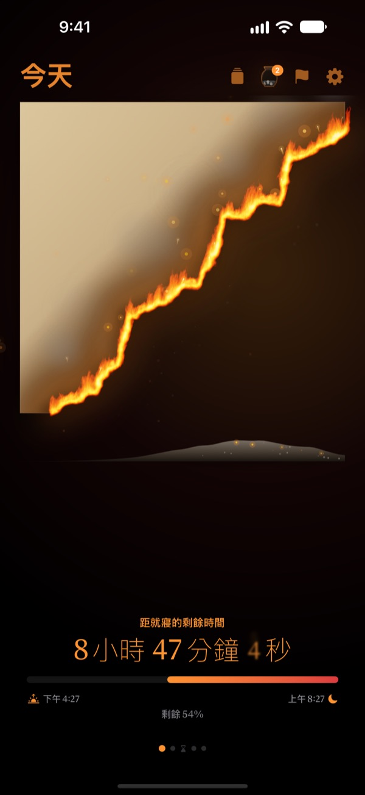
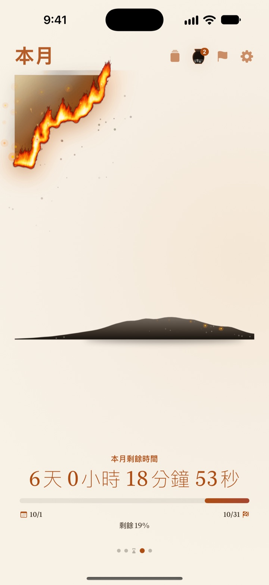
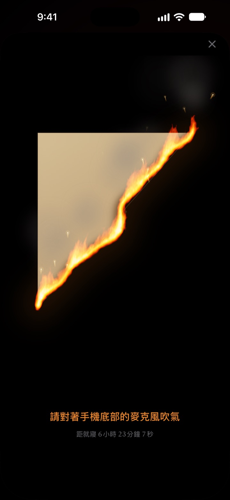
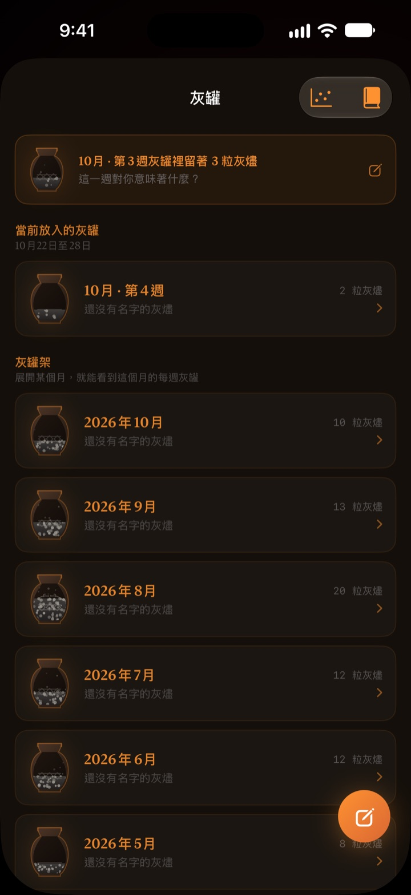

今天剩下的時間
正在眼前燃燒
看數字時毫無感覺的夜晚，變成燃燒的羊皮紙就不一樣了。睡前30分鐘，對著螢幕吹一口氣把火吹熄，結束這一天。
燃燒的羊皮紙、吹熄火焰和回顧全部免費。

親手吹熄看看
先把時間拉到快睡覺的時候，再長按按鈕，或對著麥克風吹一口氣。
是不是常常一抬頭，「怎麼已經十二點了？」
吃完晚餐休息一下，一天就沒了。時鐘上的數字每晚看起來都一樣，所以感覺不到時間在減少。燃燒的羊皮紙把剩下的時間變成一張正在燃燒的羊皮紙，讓你在夜晚溜走前就察覺。
一天、一週、一年，都在燃燒
從醒來那一刻到上床時間，羊皮紙慢慢燃燒。這週、這個月、今年還剩多少時間，也能用同一張羊皮紙來看。
有日期的目標可以加成截止日期，一起倒數到那一天。

吹一口氣，結束這一天
睡前30分鐘起，對著燃燒的羊皮紙吹氣就能把火吹熄。只偵測氣息的強度，什麼都不錄。
吹熄後剩下的碎片會被收好。翻到背面，還能為今天寫下一句話。

過去的時間化為灰燼
回顧這一天寫下一句話，再把這段時間花在哪裡，當成一個點放到兩條軸上。回顧依週和月堆進灰罐，也能在回顧書裡重新翻閱。
灰燼流向用分布圖和火種日曆告訴你，時間都去了哪裡。

三個步驟就能開始
- 1
設定起床和上床時間
點右上角的齒輪修改。羊皮紙會依照這個時間點燃、熄滅。
- 2
選擇想看的時段
左右滑動切換一天、一週、一個月、一年，不需要的頁面可以在設定中隱藏。
- 3
加入小工具
放到主畫面或鎖定畫面上，不打開 App 也能看到剩下的時間。
在哪裡看剩下的時間
- 一天
- 從醒來到上床
- 一週 · 一個月 · 一年
- 這週、這個月、今年還剩多少
- 自由時間
- 只在扣掉睡眠和工作、真正屬於自己的時間裡，本週的羊皮紙才會燃燒（Pro）
- 截止日期
- 距離目標日期還剩多少時間，可免費加入1個
- 主畫面小工具
- 一天的羊皮紙有小、中、大三種尺寸，週、月、年和截止日期有小、中兩種
- 鎖定畫面小工具
- 圓形、矩形和單行
- 動態島 · 即時動態
- 睡前1小時起顯示，或整天顯示，可在設定中選擇或關閉
展開動態島，就能看到燃燒的羊皮紙和完整的倒數。
羊皮紙免費，想留住更多就用 Pro
免費
- 一天、一週、一個月、一年的羊皮紙
- 睡前吹熄火焰，收集碎片
- 一句話回顧、灰罐和回顧書
- 早晨確認，可連結健康 App 的睡眠資料
- 主畫面和鎖定畫面小工具、動態島
- 1個截止日期
燃燒的羊皮紙 Pro
- 只燃燒屬於自己的自由時間
- 羊皮紙主題：月光韓紙、青瓷、晚霞
- 火焰樣式：野火、炭火、火星
- 把收集的碎片做成卡片和海報分享
- 把回顧書匯出成 PDF
- 過去十二個月的灰燼流向
- 不限數量的截止日期
不是訂閱。一次購買，終身使用，之後新增的 Pro 功能也全部包含。
換了裝置的話，在設定中點「回復購買」即可。
常見問題
小工具和 App 顯示的時間不一樣。
受 iOS 機制限制，主畫面小工具不會每秒更新。打開 App 後會馬上同步。想看按秒減少的倒數，請看動態島和鎖定畫面上的即時動態。
吹了氣，火卻沒有熄。
睡前30分鐘起才能吹熄。請確認已允許麥克風權限，然後靠近 iPhone 底部的麥克風，持續吹大約一秒。短促的一聲是吹不熄的。
會錄下我的聲音嗎？
不會。只偵測吹氣的強度，不會錄製或儲存任何聲音。
睡著以後會顯示什麼？
過了上床時間，會出現一顆燃燒的心，顯示到起床為止睡眠進行到哪裡。隔天早上會問你昨晚有沒有準時睡，如果晚睡了，今天早上的羊皮紙就會燒焦相應的一段。連結健康 App 後，就不再詢問，直接使用記錄的入睡時間。
什麼時候會收到通知？
睡前1小時。如果沒收到，請到 設定 > 通知 > 燃燒的羊皮紙 確認已允許通知。
會很耗電嗎？
App 內的倒數每秒跳動，但小工具由 iOS 以低耗電方式更新，對電池的影響很小。
我的紀錄存在哪裡？
起床和上床時間、截止日期、回顧和灰罐都只儲存在你的裝置上。開發者只會收到匿名使用統計、當機診斷，以及你主動傳送的意見回饋。沒有廣告，也沒有追蹤。
Pro 是訂閱嗎？
不是。付一次費就能終身使用。換了裝置，在設定中點「回復購買」即可。
問題回報、功能建議或其他詢問，請寄信至 leeo@kakao.com。